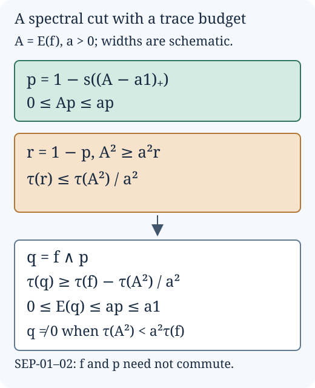

Small expectations of projections
For an inclusion of finite von Neumann algebras, a small tracial square norm of a conditional expectation can be converted into a small operator norm after taking a smaller, nonzero projection. The quantitative point is to control how much trace the cut removes. For inclusions of type II factors, this gives an exact description of the index using the expectations of projections.
In Sections 1–4, \(N\subset M\subset B(H)\) are unital finite von Neumann algebras, \(\tau\) is a faithful normal tracial state on \(M\), and \(E:M\to N\) is a trace-preserving conditional expectation. Thus \(E\) is positive, unital and \(N\)-bimodular. Write \(\|x\|_2^2=\tau(x^*x)\). Sections 1–2 use only these assumptions. Sections 3–4 additionally assume that \(N\) and \(M\) are type \(\mathrm{II}_1\) factors.
The continuous functional calculus, support projections and bounded polar decomposition used below are proved in Bounded operator kernel, items BK-01, BK-06 and BK-07. The factor-index inputs, with their proofs, are in the earlier programme lessons Positivity and index rigidity, Theorem 7.5, and Finite bases and positive index, Theorem 3.5 and Corollary 3.5a. The precise forms used here are stated at the point of use.
The trace lost in an intersection
Lemma. If \(f,p\in M\) are projections, there is a projection \(q\in M\) onto \(fH\cap pH\), and
\[ q\leq f,\qquad q\leq p,\qquad \tau(q)\geq\tau(f)-\tau(1-p). \tag{SEP.1} \]No commutation between \(f\) and \(p\) is required. We write \(q=f\wedge p\).
Proof. Put \(t=(1-p)f\), and use bounded polar decomposition to write \(t=v|t|\), with \(v\in M\). Its initial projection \(e=v^*v\) projects onto \((\ker t)^\perp\). Since \(t\) vanishes on \((1-f)H\), we have \(e\leq f\). Therefore \(q=f-e\) is a projection in \(M\), and
\[ qH=fH\cap\ker t=fH\cap pH. \tag{SEP.2} \]Indeed, for \(\xi\in fH\), the equation \(t\xi=0\) says exactly that \((1-p)\xi=0\). The range of \(t\) lies in \((1-p)H\); the closure of its range therefore has projection \(vv^*\leq1-p\). Traciality and positivity give
\[ \tau(f)-\tau(q)=\tau(v^*v) =\tau(vv^*)\leq\tau(1-p). \tag{SEP.3} \]This proves the assertion. In particular, \(\tau(f)>\tau(1-p)\) guarantees \(q\ne0\). \(\square\)
A quantitative spectral cut
Theorem. Let \(f\in M\) be a projection, put \(A=E(f)\), and let \(a>0\). There is a projection \(q\leq f\) such that
\[ \tau(q)\geq\tau(f)-\frac{\tau(A^2)}{a^2}, \qquad 0\leq E(q)\leq a1. \tag{SEP.4} \]Consequently, if
\[ \tau(E(f)^2)<a^2\tau(f), \tag{SEP.5} \]then \(q\ne0\) and \(\|E(q)\|\leq a\).
Proof. Positivity and unitality give \(0\leq A\leq1\). Define the positive parts by continuous functional calculus in \(N\):
\[ h=(A-a1)_+,\qquad g=(a1-A)_+. \tag{SEP.6} \]The scalar identities for positive and negative parts give
\[ A=a1+h-g,\qquad hg=gh=0. \tag{SEP.7} \]Let \(r=s(h)\in N\) be the support projection and put \(p=1-r\). The support is the strong limit of \(h(h+\varepsilon1)^{-1}\) as \(\varepsilon\downarrow0\). Each cutoff commutes with \(A\); hence \(r\) and \(p\) commute with \(A\). We have \(hp=0\), while \(gh=0\) implies \(gr=rg=0\), either by the same cutoffs or by continuity on \(\overline{hH}\). Thus
\[ Ap=ap-g\leq ap,\qquad Ar=ar+h\geq ar. \tag{SEP.8} \]Here \(g=gp\), \(h=hr\), and \(Ap\geq0\). The reducing decomposition \(H=pH\oplus rH\) now gives
\[ A^2=(Ap)^2+(Ar)^2\geq a^2r. \tag{SEP.9} \]For the last inequality, explicitly expand \((ar+h)^2=a^2r+2ah+h^2\). Taking traces yields
\[ \tau(1-p)\leq a^{-2}\tau(A^2). \tag{SEP.10} \]Apply SEP-01 and set \(q=f\wedge p\). Its trace satisfies the first inequality in (SEP.4). Since \(q\leq f\) and \(q\leq p\), compression by \(p\) gives \(q=pqp\leq pfp\). Positivity and bimodularity of \(E\), followed by (SEP.8), give
\[ 0\leq E(q)\leq E(pfp)=pE(f)p=Ap\leq ap\leq a1. \tag{SEP.11} \]This proves (SEP.4). The strict inequality (SEP.5) makes the lower bound for \(\tau(q)\) positive. The norm assertion follows from the positive-operator norm formula in BK-01. \(\square\)

Figure. A schematic of the proof, with \(p\) the spectral region where \(A\leq a\), \(r=1-p\), and \(q=f\wedge p\). Widths are schematic and do not represent a particular spectral distribution. The trace bounds are (SEP.10) and (SEP.4), and the expectation bound is (SEP.11). The figure is an editable SVG.
The strict inequality in (SEP.5) matters: the trace estimate alone does not force a nonzero intersection when its lower bound is zero. Also, the cut depends on \(E(f)\), rather than on \(f\) alone; generally \(f\) and \(p\) need not commute.
Infinite index gives small expectation projections
Corollary. Suppose \(N\subset M\) is an inclusion of type \(\mathrm{II}_1\) factors with infinite Jones index. For every \(\delta>0\) there is a nonzero projection \(q\in M\) with
\[ \|E(q)\|<\delta. \tag{SEP.12} \]Proof. We use the following precise consequence of the proof of Positivity and index rigidity, Theorem 7.5: at infinite index, for every \(\eta>0\) there is a nonzero projection \(f\in M\) with
\[ \frac{\|E(f)\|_2^2}{\|f\|_2^2}<\eta. \tag{SEP.13} \]That proof supplies projections in each of its cases: an infinite-dimensional relative commutant, an irreducible inclusion, and a finite-dimensional non-scalar relative commutant. Its corner argument returns a projection in the original algebra and accounts for the normalization of the corner trace. We use this projection conclusion, not merely an infimum over arbitrary positive elements.
Choose \(0<a<\delta\) and use (SEP.13) with \(\eta=a^2\). Since \(f\) is a projection, \(\|f\|_2^2=\tau(f)\), and the numerator is \(\tau(E(f)^2)\). Thus (SEP.5) holds. SEP-02 supplies a nonzero projection \(q\leq f\) with \(\|E(q)\|\leq a<\delta\). \(\square\)
This conclusion concerns operator norm. A small \(L^2\) norm by itself would not control operator norm; the smaller projection and the trace estimate provide the additional step.
The index as an infimum over projections
Theorem. For an inclusion \(N\subset M\) of type \(\mathrm{II}_1\) factors, let \(d=[M:N]\in[1,\infty]\) and use \(\infty^{-1}=0\). Then
\[ \inf_{\substack{q\in M\text{ a projection}\\q\ne0}} \|E(q)\|=d^{-1}. \tag{SEP.14} \]If \(d<\infty\), a nonzero projection attains the infimum and can be chosen to satisfy \(E(q)=d^{-1}1\). If \(d=\infty\), the infimum is not attained.
Proof. For finite \(d\), Finite bases and positive index, Theorem 3.5 proves
\[ E(x)\geq d^{-1}x\qquad(x\in M_+). \tag{SEP.15} \]For a nonzero projection \(q\), take a unit vector \(\xi\in qH\). The positive-operator norm formula and (SEP.15) give
\[ \|E(q)\|\geq\langle E(q)\xi,\xi\rangle\geq d^{-1}. \tag{SEP.16} \]Corollary 3.5a of that same earlier lesson constructs a projection \(q\in M\) with \(E(q)=d^{-1}1\). Its trace is \(d^{-1}>0\), so it is nonzero and attains equality. These arguments include \(d=1\).
For infinite \(d\), SEP-03 makes the nonnegative infimum zero. It cannot be attained: if \(\|E(q)\|=0\), then \(E(q)=0\), so trace preservation gives \(\tau(q)=\tau(E(q))=0\). Faithfulness of \(\tau\) forces \(q=0\), which is excluded. \(\square\)
The exact spectral cutoff for a normal state
This section allows any von Neumann algebra \(M\) and any normal state \(\varphi\), without a trace or a faithfulness assumption. Put \(\|x\|_\varphi=\varphi(x^*x)^{1/2}\).
Proposition. Let \(0\le h\le1\), and suppose
\[ \delta=\|h-h^2\|_\varphi<\frac14. \]For the specified spectral projection
\[ e=1_{[1-\sqrt\delta,1]}(h), \]one has
\[ \|h-e\|_\varphi\le\sqrt{2\delta}, \qquad \|h^{1/2}-e\|_\varphi\le\sqrt{3\delta}. \]In particular these imply \(\|h-e\|_\varphi\le2\sqrt\delta\) and \(\|h^{1/2}-e\|_\varphi\le2\delta^{1/4}\), including \(\delta=0\).
Proof. The bounded Borel calculus in Spectral calculus kernel, SK-04, supplies the interval projections, their order comparisons and their increasing strong limits in \(M\). First assume \(\delta>0\). Write \(a=h(1-h)\). All projections and functions in this argument commute. On \(1-e\), the inequality \((1-h)^2\ge\delta\) gives
\[ h^2(1-e)\le\delta^{-1}a^2, \qquad \varphi(h^2(1-e))\le\delta. \]Put \(t=\varphi(a)\ge0\). Applying \(\varphi\) to the positive element \((a-t1)^2\) gives \(0\le\varphi(a^2)-t^2\), so \(\varphi(a)\le\varphi(a^2)^{1/2}=\delta\). Therefore
\[ \varphi(h(1-e)) =\varphi(h^2(1-e))+\varphi(a(1-e)) \le2\delta. \]On \(e\), both \((1-h)^2\) and \((1-h^{1/2})^2\) are bounded by \(\delta e\). Decomposing each squared error over \(e\) and \(1-e\) now gives \(\varphi((h-e)^2)\le2\delta\) and \(\varphi((h^{1/2}-e)^2)\le3\delta\).
Now let \(\delta=0\), so the required projection is exactly \(e=1_{\{1\}}(h)\). For each integer \(n\ge2\), put
\[ p_n=1_{[1/n,\,1-1/n]}(h), \qquad c_n=\frac1{n^2}\left(1-\frac1n\right)^2>0. \]Functional calculus gives \(a^2\ge c_n p_n\). Since \(\varphi(a^2)=0\), positivity implies \(\varphi(p_n)=0\). These projections increase to \(p=1_{(0,1)}(h)\); normality consequently gives \(\varphi(p)=0\). The functions \(h-e\) and \(h^{1/2}-e\) vanish on both endpoint spectral subspaces. On the remaining subspace their squares are positive contractions. Thus
\[ 0\le(h-e)^2\le p, \qquad 0\le(h^{1/2}-e)^2\le p. \]Applying \(\varphi\) proves both zero-error conclusions for the prescribed projection. This argument does not infer \(h^2=h\) from a nonfaithful state. \(\square\)
For example, in \(M_2(\mathbb C)\) let \(h=\operatorname{diag}(1,1/2)\) and \(\varphi(x)=x_{11}\). Then \(\delta=0\) and \(e=\operatorname{diag}(1,0)\), while \(h\) itself is not a projection. Both stated seminorm errors are zero, exactly as the proposition asserts.
Sources and scope
The spectral-cut argument addresses the unnumbered final step of Takesaki, Theory of Operator Algebras III, XIX.4, Theorem 4.14, printed page 477. Sections 1–2 give its projection-intersection and trace estimates explicitly for arbitrary finite von Neumann algebras with a faithful tracial state. Sections 3–4 combine that argument with the earlier programme proofs named above. Section 5 treats the specified state spectral cutoff of XIV.2, Lemma 2.2, printed pages 96–97. Its bounds hold for every normal state, including the exact zero-defect endpoint and nonfaithful states. The results are presented as course exposition; no novelty is claimed.